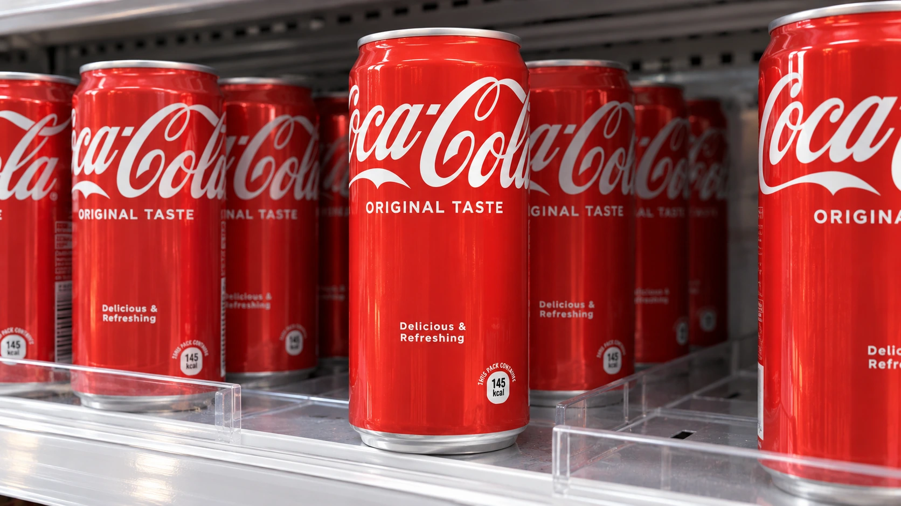

Coca-Cola Raises Its Profit Outlook as Global Volumes Grow 5%
International demand supported the upgrade, while flat North American volumes show why price, product mix and regional performance need separate scrutiny.

Coca-Cola raised its full-year outlook on Tuesday after global unit case volumes grew 5% in the third quarter. The beverage company's results show demand expanding beyond price increases, with international markets supporting the performance. North American volumes, however, were flat. That regional split makes the release a more selective account of consumer spending than an unqualified signal of strength everywhere.
The company reported quarterly revenue of about $13.4 billion. Reuters put analysts' revenue expectation at $12.92 billion and their adjusted earnings expectation at 88 cents per share, compared with the company's 91 cents. Those comparisons explain the earnings beat without implying that every division exceeded its own forecast or that the subsequent share price must move in a particular direction.
For investors, the useful distinction is between selling more beverages, collecting more revenue per unit and translating overseas sales into dollars. Our guide to earnings beats and misses explains why those operating details matter alongside the headline comparison with consensus. A result can beat estimates while still leaving open questions about the durability and geographic distribution of growth.
Volume adds substance to the growth story
Coca-Cola's release reported 7% organic revenue growth, a non-GAAP measure, alongside 1% growth in price/mix. Concentrate sales grew faster than unit case volume because of shipment timing. These measures track different parts of the system: concentrate shipments are not identical to the finished beverages being sold through the network in a particular period.
That distinction helps avoid a common mistake in reading consumer-company results. Revenue can increase because of pricing, a shift toward higher-value products or packaging, currencies, or more underlying demand. The contribution of each changes the interpretation. Stronger volume provides evidence of consumption growth, while a higher average sales value does not establish that consumers bought more physical product.
The regional comparison reinforces that point. The company cited India, China, Mexico and Brazil as contributors to global volume growth. North America's flat total included gains in trademark Coca-Cola offset elsewhere in the portfolio. A diversified beverage business can therefore gain in one category while losing enough in another to leave the region unchanged overall.
Profit measures answer different questions
Reported operating margin reached 33.4%, compared with 32% a year earlier; the comparable margin was 32.9%. The difference illustrates why reported and adjusted measures should be labeled consistently. Adjustments can help compare operating periods, but they do not replace the financial statements or make every excluded item irrelevant to shareholders.
The Wall Street Journal reported that Coca-Cola lifted its full-year comparable earnings-per-share growth target to at least 11%, from 9% to 10%. That is distinct from the currency-neutral measure excluding acquisitions and divestitures. Mixing those targets would create a false impression of the size of the upgrade, since each uses a different basis of comparison.
The revised organic revenue target is growth of at least 5%. Both targets remain management expectations. Their eventual delivery will depend on demand, costs, currencies and execution through the remainder of the year. A forecast revision is meaningful new information, but it is not an additional quarter of earnings already earned or a guaranteed outcome.
Cash generation gives the outlook another test
Our free cash flow explainer sets out why cash generation deserves attention alongside accounting earnings. A company can report growing profit while spending more on equipment or carrying additional working capital. The timing of collections and payments can also make a single period's cash performance differ from the pace of the income statement.
For Coca-Cola, the next evidence to follow is whether volume momentum continues and how costs affect the conversion of sales into profit. It would be premature to treat one company's global beverage performance as a direct estimate of the health of every American household. Our guide to consumer bellwethers discusses why a company's customers, products and geographic exposure determine what its results can reveal.
Tuesday's upgrade rests on a real operating improvement, with rising global volumes accompanying the profit outlook. The flat North American volume result remains part of the same story. Reading both together produces a more useful assessment than treating either the global growth number or the regional weakness as a complete description of demand.
Sources and methodology
Sources checked October 27, 2026. Company statements, reported findings and forecasts are attributed in the text. Financial and operational implications are editorial analysis.